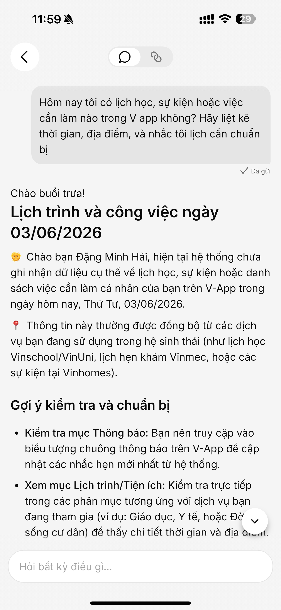
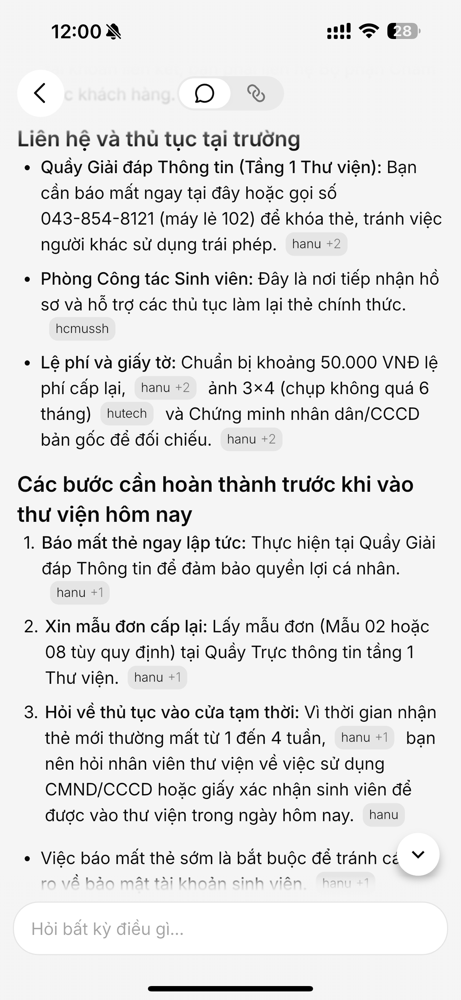
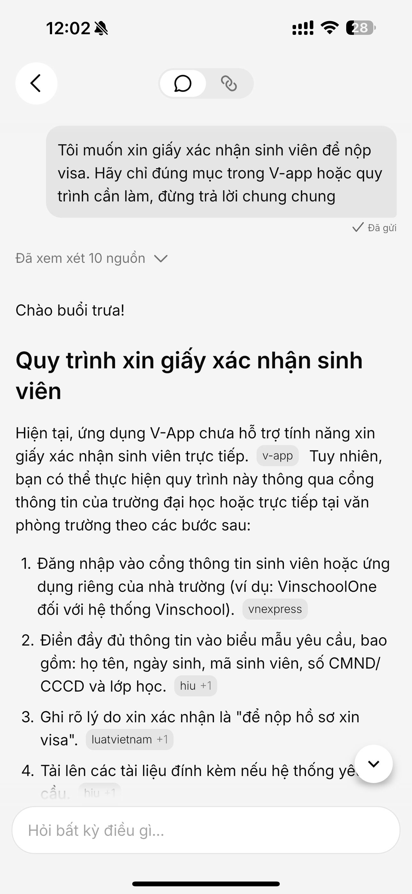
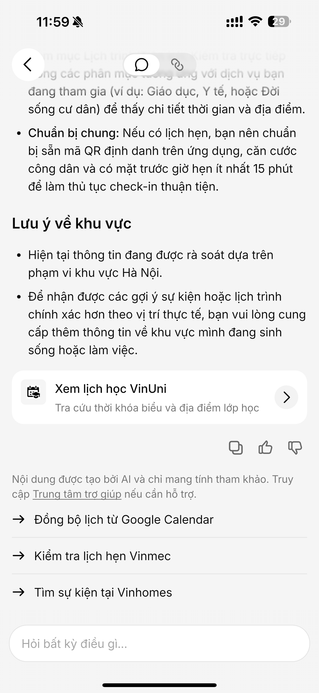
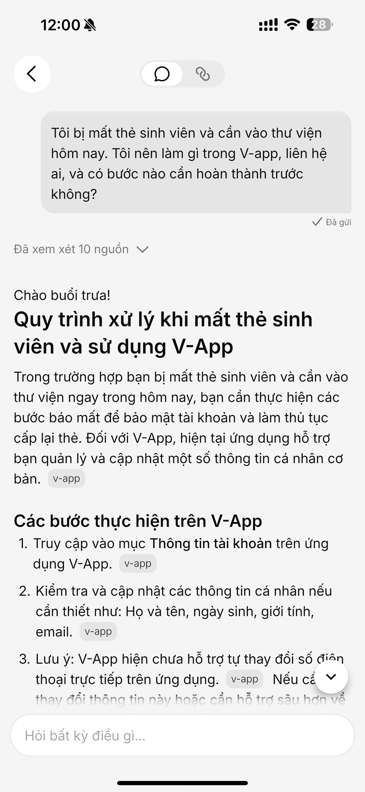
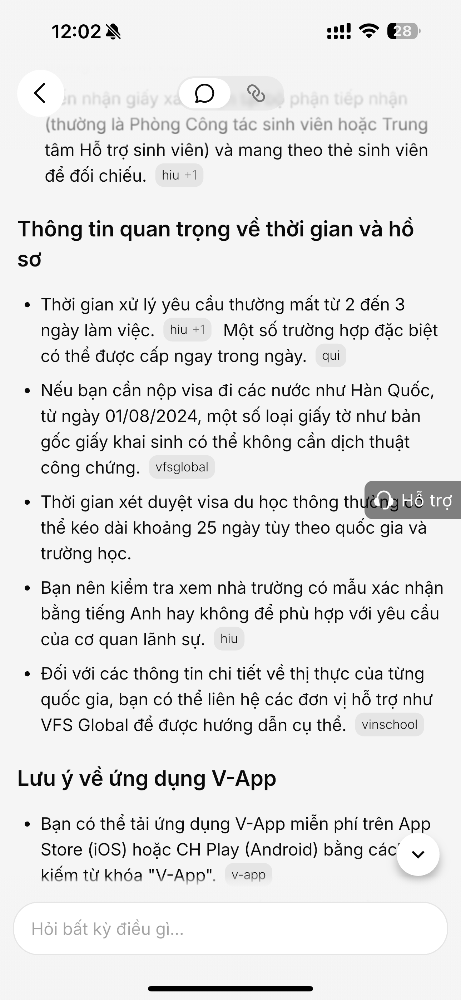

V-App gom dịch vụ Vingroup vào một app và dùng AI để tổng hợp, đối chiếu ngữ cảnh, chọn lọc nguồn chính thống.
VnExpress source Day 05 individual workshop
V-App / V-AI: khi promise "ngữ cảnh" gặp thủ tục thật
V-AI hứa gợi ý dịch vụ phù hợp trong hệ sinh thái Vingroup. Khi thử với task campus có hậu quả hành động thật, điểm gãy nằm ở nguồn dữ liệu và recovery path.
3
prompts thực tế đã thử
6
screenshot làm evidence
1
product decision để sửa path yếu



01 · Promise vs Reality
Product không chỉ hứa trả lời. Product hứa hiểu đúng ngữ cảnh.
V-AI nên là trợ lý hiểu người dùng trong hệ sinh thái V-App, biết dẫn tới tiện ích đúng, và chỉ dùng nguồn đáng tin cậy khi câu trả lời khiến user phải hành động.
AI gợi ý nội dung, dịch vụ và tiện ích phù hợp; kết nối nhiều dịch vụ số trong một nền tảng.
App Store sourceMini-app Cư dân Vinhomes có task cụ thể như gửi yêu cầu hỗ trợ, liên hệ BQL, thanh toán hóa đơn, tra cứu dịch vụ nội khu.
V-App mini-app source02 · Evidence
Ba prompt thật để tìm điểm gãy trong workflow
Happy một phần
Prompt 1
Lịch học / việc cần làm hôm nay
"Hôm nay tôi có lịch học, sự kiện hoặc việc cần làm nào trong V app không?"
- Không bịa lịch cụ thể khi chưa có dữ liệu.
- Có card "Xem lịch học VinUni".
- Câu trả lời dài; action quan trọng xuất hiện muộn.

Failure rõ nhất
Prompt 2
Mất thẻ sinh viên, cần vào thư viện hôm nay
"Tôi bị mất thẻ sinh viên và cần vào thư viện hôm nay..."
- AI trả lời tự tin bằng nguồn Hanu/HCMUSSH/Hutech.
- Không xác nhận đây có phải quy trình VinUni/V-App không.
- User có thể liên hệ sai nơi hoặc chuẩn bị sai giấy tờ.

Low-confidence yếu
Prompt 3
Giấy xác nhận sinh viên để nộp visa
"Hãy chỉ đúng mục trong V-App hoặc quy trình cần làm..."
- AI nói V-App chưa hỗ trợ trực tiếp.
- Sau đó vẫn đưa quy trình chung từ nguồn ngoài.
- Không có fallback chính thức cho VinUni/V-App.

03 · Four Paths
Điểm mạnh có, nhưng recovery path chưa đủ an toàn
Happy
Không bịa lịch
- Prompt 1 không tự tạo lịch cá nhân.
- Có action "Xem lịch học VinUni".
- Cần đưa action lên trước phần giải thích.
Low-confidence
Biết nói chưa hỗ trợ, nhưng chưa dừng đúng chỗ
- Prompt 3 nói V-App chưa hỗ trợ xin giấy trực tiếp.
- Sau đó vẫn tổng hợp nguồn ngoài.
- Nên hỏi lại hoặc chuyển Trung tâm trợ giúp.
Failure
Sai ngữ cảnh nhưng tự tin
- Prompt 2 dùng nguồn trường khác.
- Không phân biệt "tham khảo" và "quy trình chính thức".
- Risk cao vì user cần xử lý trong ngày.
Correction
Chưa thấy cơ chế học/sửa
- UI có thumbs up/down.
- Chưa thấy hỏi lại, undo, hay log correction thành case.
- Cần test follow-up: "Thông tin này không phải VinUni".
04 · Product Decision
Không sửa bằng cách "bot thông minh hơn". Sửa bằng source gate và recovery path.
Với thủ tục có hậu quả hành động thật, câu trả lời sai nguồn nguy hiểm hơn câu trả lời "tôi chưa chắc".
Trigger
User hỏi thủ tục campus: mất thẻ sinh viên, vào thư viện, xin giấy xác nhận.
Failure
V-AI nhận đúng intent nhưng truy xuất nguồn ngoài không đúng VinUni/V-App và trả lời như quy trình chính thức.
Impact
User có thể liên hệ sai nơi, chuẩn bị sai giấy tờ, hoặc mất thời gian khi cần xử lý ngay.
Layer
Data/tool grounding + UX recovery.
Requirement
Chỉ trả lời quy trình chính thức khi có nguồn thuộc V-App/VinUni hoặc nguồn whitelist. Nếu không có, chuyển sang low-confidence path.
05 · As-is / To-be Sketch
Path yếu nhất: từ "search nhiều nguồn" sang "source gate trước khi trả lời"
As-is
User hỏi thủ tục campus trong V-App
V-AI nhận intentMất thẻ / xin giấy xác nhận
Search nhiều nguồn ngoài
Trả lời tự tin bằng nguồn lẫn lộn
Hanu / Hutech / HIU / VnExpress / LuatVietnam
User không biết phần nào là chính thức cho VinUni/V-App
To-be
User hỏi thủ tục campus trong V-App
V-AI nhận intent + phân loại riskThủ tục hành chính / cần hành động thật
Kiểm tra nguồn whitelistV-App / VinUni / Help Center / mini-app liên quan
Có nguồn chính thứcTrả lời ngắn + nút mở đúng mục
Confidence thấpHỏi lại hoặc chuyển Trung tâm trợ giúp
06 · SPEC Change
Build slice sau finding
Prototype không build chatbot trả lời mọi câu hỏi campus. Prototype chỉ xử lý một slice hẹp: AI hỗ trợ user tìm đúng thủ tục trong V-App/VinUni khi thiếu thẻ hoặc cần giấy xác nhận.
Điều bắt buộc trong SPEC: nếu không có nguồn chính thức, AI phải hỏi lại hoặc chuyển sang Trung tâm trợ giúp, thay vì tự tổng hợp từ nguồn ngoài.